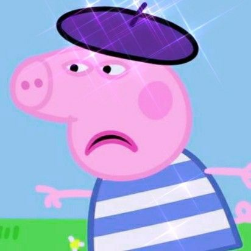
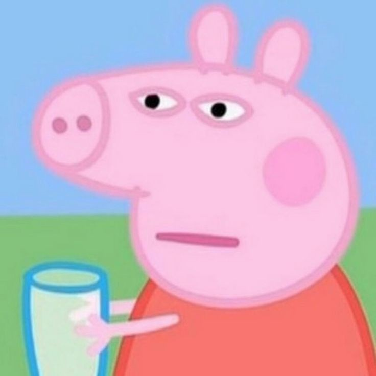

 Oi eu sou a Peppa oink, tenho uma mamãe, um papai bobinho e um irmãozinho chamado George. Atualmente eu moro na Inglaterra, mesmo país da rainha Elizabeth inclusive já fui ao palacio de Buckingham com meus amigos da escola e tomamos chá com ela, ela era super legal e atenciosa (rip Betinha). Adoro pular em poças de lama e me exercitar, assim como meu irmão e minha mamãe, exceto o papai, ele odeia exercícios, deve ser por isso que está com aquele barrigão dele. Já visitei diversos lugares, como já disse, o palácio foi um deles, mas já fui ao zoológico, ao parque do senhor batata, e diversos outros lugares. Tenho uma melhor amiga que se chama Suze a Ovelha. Ela é super legal, mas as vezes me irrita. Ela é uma amiga muito querida, mas aviso que é uma trapaceira quando se trata de jogos. Falando nisso, eu amo jogar jogos. Dizem que eu não sei perder, mas acredito que seja inveja por eu ser muito boa em tudo, e na verdade, quem sempre trapaceia são os que jogam comigo. O jorge, meu irmão ama dinossauros, ele até acredita que um dia vai encontrar um na vida real, coitado. Na horas vagas eu gosto de pisar em poças, a mamãe gosta de ler sua revista favorita, o jorge brincar com seus dinossauros, e o papai ama assistir tv em sua poltrona. Se você não me seguir, vou ficar muito brava e você não vai querer isso...

Peppa Pig
Eu sou a peppa oink